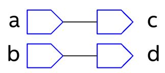
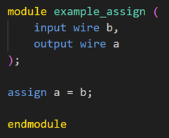
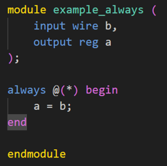

module wire_reg( input a, input b, output c, output d ); c = a; @(*)begin d = b; endmodule 1. What is the module name?    These two modules have the same functionality but are expressed differently.


